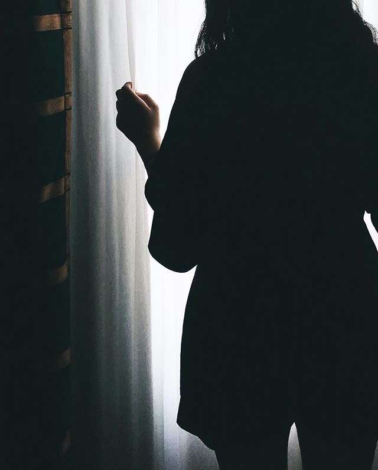

C I N D Y
C H E N G
C I N D Y
C H E N G
ARCHITECTURE STUDENT BASED IN TORONTO.
A LOVER OF FILM AND DREAM POP
I EXPLORE THE HABITUAL INTERACTION BETWEEN COLOUR AND LIGHT AND THEIR ROLE IN OUR HUMAN EXPERIENCE THROUGH PHOTOGRAPHY
A LOVER OF FILM AND DREAM POP
I EXPLORE THE HABITUAL INTERACTION BETWEEN COLOUR AND LIGHT AND THEIR ROLE IN OUR HUMAN EXPERIENCE THROUGH PHOTOGRAPHY